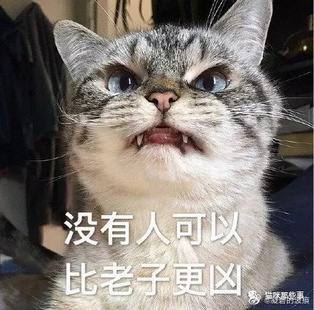

昨晚跟大家聊得很开心哈。姣姣知道我讲了一个半小时，还是惊到了：老妈你太能BB了。
@凝碧的波痕:
昨晚@Ada李力 关于职场和创业跟我们#女性成长读书会# 的小伙伴聊了一个半小时，我印象最深的也是对我非常有启发的是以下几点：
1⃣️职场上更看重实力，所以应该淡化性别，该抢就抢，该争就争。什么样的就该争呢？很简单的一个标准：男人都抢着做的一定要好的。
2⃣️创业之前要积累技能，要选择与自己价值观匹配的项目，要倾听自己内心的声音，要行动，要勇于承担责任，在不断的尝试中认识自己。
3⃣️面对职场中的各种问题，在忍、狠、滚三者中，绝对不要选忍。做面鸭子就会被欺负，忍到最后只会内伤，自我攻击，伤害自己。
4⃣️自己爽很重要，要以自己喜欢的方式过一生。如果没有，就创造一个出来。多给自己正面的心理暗示，相信自己，不拧巴才能活得更开心。
@白勺犭苗 觉得Ada思维敏捷言语犀利，考虑问题很直接。她很赞同（我也是）Ada从事情本身出发——这件事我想不想做，能不能做，该怎么做，有多大把握和决心，成本和风险能否承担，——而不是总想着女性应该如何如何。
在谈社会问题的时候我们可以从女性群体角度去深入地探究和分析，但是在具体问题上，女性自己一定要把自己当作是主体，不要多想【女人】该如何，而是我这个【人】该如何。
归根结底，任何时候就从自己出发，想【我】要怎么样就可以了。对我好，我想干，我能干，那就干起来吧！
1⃣️职场上更看重实力，所以应该淡化性别，该抢就抢，该争就争。什么样的就该争呢？很简单的一个标准：男人都抢着做的一定要好的。
2⃣️创业之前要积累技能，要选择与自己价值观匹配的项目，要倾听自己内心的声音，要行动，要勇于承担责任，在不断的尝试中认识自己。
3⃣️面对职场中的各种问题，在忍、狠、滚三者中，绝对不要选忍。做面鸭子就会被欺负，忍到最后只会内伤，自我攻击，伤害自己。
4⃣️自己爽很重要，要以自己喜欢的方式过一生。如果没有，就创造一个出来。多给自己正面的心理暗示，相信自己，不拧巴才能活得更开心。
@白勺犭苗 觉得Ada思维敏捷言语犀利，考虑问题很直接。她很赞同（我也是）Ada从事情本身出发——这件事我想不想做，能不能做，该怎么做，有多大把握和决心，成本和风险能否承担，——而不是总想着女性应该如何如何。
在谈社会问题的时候我们可以从女性群体角度去深入地探究和分析，但是在具体问题上，女性自己一定要把自己当作是主体，不要多想【女人】该如何，而是我这个【人】该如何。
归根结底，任何时候就从自己出发，想【我】要怎么样就可以了。对我好，我想干，我能干，那就干起来吧！
- 